TEMA: Transformação Industrial: Sustentabilidade e Inteligência Artificial na Criação de Soluções
Kit 2º Ano (Turmas 2A e 2B)
Criar um protótipo físico ou serviço que utilize Inteligência Artificial e Sustentabilidade para resolver um problema real da indústria.
O objetivo desta vez é entregar um MVP (Mínimo Produto Viável) completo, com frontend e backend integrados.
É OBRIGATÓRIO: Buscar demandas reais na plataforma SAGA SENAI GP Inovação.
Sua solução deve ser baseada em necessidades verdadeiras mapeadas pela plataforma para garantir relevância no mercado industrial.
Para construir a solução, a turma será dividida em dois grupos principais:
15 a 16 integrantes
15 a 16 integrantes
Cada grupo produzirá o seu próprio produto final completo.

Sesi Alimentação
Sistema para gerenciar e inovar na área de alimentação corporativa.
Ver Documentação na Plataforma GP InovaçãoTreinamentos Obrigatórios
Plataforma Gamificada para Treinamentos Corporativos Obrigatórios.
Ver Documentação na Plataforma GP InovaçãoA formação dos grupos ocorrerá através da sua escolha profissional. Existem três categorias neste nível:
Teremos aproximadamente 10 alunos em cada categoria profissional.
Esses 10 alunos se dividirão em dois subgrupos de 5.
Por fim, os professores definirão qual subgrupo vai para o Alfa e qual vai para o Beta.
Entregar o Protótipo de Alta Fidelidade no Figma e a Interface desenvolvida.
O foco é entregar todas as interações propostas e a navegação, sempre alinhado com o time de Marketing para garantir a identidade visual.
Construir a API e a Documentação Técnica do Projeto.
Vocês definirão: Modelagem MER do Banco de Dados, Criação de Endpoints (API) com retornos JSON, Documentação (Insomnia/Postman) e a stack utilizada.
Construir o Plano Go-to-Market e Apresentação visual do Pitch.
Vocês definirão a identidade visual completa (logotipo, cores, fontes) e criarão as peças para LinkedIn/Instagram para a venda matadora da solução!
Na data de integração, o Grupo Alfa e o Grupo Beta terão cada um 15 minutos para apresentar o Pitch do MVP desenvolvido.
Os professores avaliarão as apresentações e selecionarão, por categoria profissional, as entregas que tiveram a melhor performance técnica e de qualidade.
Após a eleição, os grupos Alfa e Beta se unem para formar o Grupo Dev (a turma inteira).
A missão agora é unificar e consolidar o produto final juntando as melhores partes para construir o Pitch Unificado do MVP.
Datas: 26 e 27/05/2026
Atividades práticas: Manhã (8h-11h) e Tarde (14h-17h)
Kickoff e Escopo
Design e Docs
Integração
Ativ. Prática
Grande Pitch
Baixe agora a especificação completa em PDF para não perder nenhum detalhe.